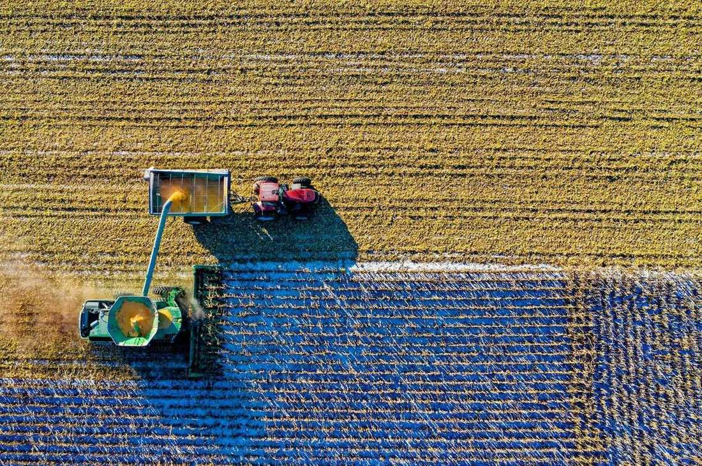

Peças e implementos
A peça da colheita não espera até amanhã.
Balcão em Rio Verde para quem está com a máquina parada. Código interno, aplicação e se sai hoje ou chega em 24 horas na região.
Balcão digital
Qual máquina parou?
Escolha o modelo da casa e o sistema. A lista é vitrine fictícia, com código interno — do jeito que o balconista procura, não do jeito do catálogo importado.
O que o balcão mostra primeiro

EX-4410
Filtro de óleo do motor
Trator 180 cv · troca a cada 250 h · sai hoje
Item de giro. O balconista puxa pelo código EX-4410, não pelo nome de catálogo estrangeiro.
- Máquina
- Trator médio 180 cv
- Aplicação
- Motor, intervalo de 250 horas
- Prateleira
- Sai no balcão
- Código
- EX-4410

EX-4418
Filtro de ar externo
Trator 180 cv · poeira de plantio · sai hoje
Na poeira do plantio o filtro entope antes da hora marcada. A casa deixa par sobrando.
- Máquina
- Trator médio 180 cv
- Aplicação
- Admissão de ar
- Prateleira
- Sai no balcão
- Código
- EX-4418

EX-7721
Mangueira da plataforma
Colheitadeira 40 pés · 24 h na região
Mangueira de alta da plataforma. Medida conferida no balcão antes de sair, para não voltar no meio do talhão.
- Máquina
- Colheitadeira axial 40 pés
- Aplicação
- Acionamento da plataforma
- Prateleira
- Chega em até 24 h num raio de 90 km
- Código
- EX-7721

EX-3104
Faca seccionada
Plataforma 40 pés · jogo de 10 · sai hoje
Seção de corte para plataforma de cereais. Vende em jogo porque uma faca só não resolve o trecho falhado.
- Máquina
- Colheitadeira axial 40 pés
- Aplicação
- Barra de corte
- Prateleira
- Sai no balcão, jogo com 10 seções
- Código
- EX-3104
EX-5502
Disco de corte 18"
Plantadeira 30 linhas · palhada de milho
Disco para palhada pesada de milho. A casa indica o par, não a unidade solta, quando o desgaste está desigual.
- Máquina
- Plantadeira 30 linhas
- Aplicação
- Corte da palhada
- Prateleira
- Sai no balcão
- Código
- EX-5502

EX-8807
Sensor de altura da barra
Pulverizador 30 m · 24 h
Quando o sensor falha, a barra beija o chão. A peça sai com o conector conferido.
- Máquina
- Pulverizador autopropelido 30 m
- Aplicação
- Altura automática da barra
- Prateleira
- Chega em até 24 h na região
- Código
- EX-8807

EX-2280
Motor hidráulico de linha
Plantadeira 30 linhas · sob consulta de prazo
Motor de acionamento de dosador. Não é item de prateleira cheia: a casa confirma o lado e o fluxo antes de pedir.
- Máquina
- Plantadeira 30 linhas
- Aplicação
- Dosador de semente
- Prateleira
- Encomenda com prazo combinado
- Código
- EX-2280
EX-9012
Alternador 150 A
Trator 180 cv e axial · sai hoje
Alternador de giro alto para máquina que dorme com farol e monitor ligados.
- Máquinas
- Trator 180 cv e colheitadeira axial
- Aplicação
- Sistema elétrico
- Prateleira
- Sai no balcão
- Código
- EX-9012
Nada neste filtro.
O produtor manda o EX no áudio. O balconista acha a gaveta sem traduzir catálogo.
O site diz o prazo antes da viagem até Rio Verde. Máquina parada não aceita “vamos ver”.
Disco, faca e mangueira do mesmo atendimento. Uma nota, uma viagem.
A casa
Oficina de pai e filho que virou endereço de peça.
A Eixo abriu em 2004 na saída para Montividiu, quando a colheita de Rio Verde começou a não perdoar atraso. O estoque cresceu em cima do que realmente parava máquina, não do que o representante queria empurrar.

Rui Matos
Dono. Ainda atende o balcão na abertura da colheita.
Lívia Sampaio
Peças de plataforma e plantio. Confere medida antes de prometer.
Davi Cruz
Entrega. Conhece a vicinal que a carreta não desce.
“Mandei o código às 6h. Às 9h a faca estava na plataforma.”
“Parei de ir à cidade para ouvir que não tem. O site já diz.”
“O sensor da barra chegou no outro dia. Não perdi a janela do fungicida.”
Marcas parceiras fictícias
- Aço da Serra
- Borrachas do Cerrado
- Filtro Planalto
- Hidráulica Vereda
- Corte Rio Verde
- Elétrica do Talhão
Antes de descer a máquina
Não. É o código interno da Eixo, o mesmo do balcão. O cruzamento com o original o balconista faz com você.
No raio de 90 km, o que está marcado como “sai hoje” sai no mesmo dia enquanto o balcão está aberto. Fora disso, combinamos o horário.
Ajustamos disco, kit de linha e revisão de plataforma na oficina da casa. Máquina inteira é conversa com a concessionária.
A vitrine mostra os quatro conjuntos que mais param na região. Manda o modelo no WhatsApp que o balcão responde com o que tem.
Em item hidráulico selecionado, sim, para conferir o defeito. Não é regra de todos os códigos.
Sua loja de peças com esse balcão no celular.
Demonstração fictícia. Se o produtor da sua cidade procura peça de madrugada, o site pode responder antes do balcão abrir.
Quero uma prévia do meu site